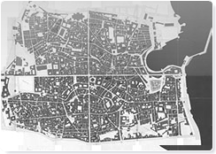
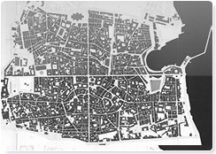
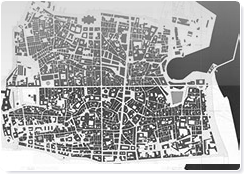
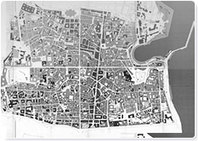

P.P.E. - Sintesti storica dei mutamenti catastali - tavole 4, 5, 6 e 7 - Scala 1:2000
|  |  |
| Tav. 4 - Il Catasto del 1877 | Tav. 5 - Il Catasto del 1930 |
|  |  |
| Tav. 6 - Il Catasto del 1954 | Tav. 7 - Sintesti storica dei mutamenti catastali |
P.P.E. - Sintesti storica dei mutamenti catastali - tavole 4, 5, 6 e 7 - Scala 1:2000 |
||||||||||||||
|
||||||||||||||